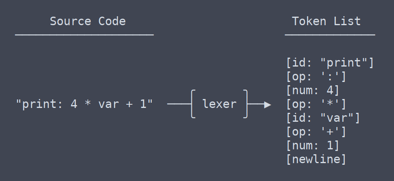

Статьи про Frontend-разработку
ИИ: Для любых задач фронтенда
В 2024 году использование искусственного интеллекта выйдет далеко за рамки автоматизации простых задач. ИИ становится все более мощным инструментом, способным помочь фронтенд-разработчикам на всех этапах разработки.

ИИ-инструменты позволяют быстро создавать прототипы на основе простых набросков, скриншотов или Figma-дизайнов. Он также может генерировать HTML, CSS и JavaScript код из простых описаний интерфейса.
Микрофронтенды: Децентрализация фронтенда
Вдохновленные микросервисной архитектурой бэкенда, микрофронтенды разбивают веб-приложение на автономные модули. Каждый микрофронтенд реализует автономную функцию, имеет собственную структуру папок, код, стили и может разрабатываться и развертываться независимо. PayPal, Netflix, American Express и другие гиганты уже применяют эту архитектуру.
Микрофронтенды – это не просто модный тренд, а перспективный подход к разработке крупных и сложных веб-приложений. Ошибки в одном модуле не затрагивают другие, при этом команды могут работать автономно, не влияя друг на друга.
JavaScript: Все также лидер
Несмотря на неоднозначное отношение, JavaScript продолжает доминировать в frontend-разработке. Так, последние 11 лет он является лидером в рейтинге Stack Overflow. Хотя и существуют альтернативы, такие как TypeScript, CoffeeScript, Dart и ClojureScript – JS все также является наиболее востребованным и удобным в работе.

Язык используется как на фронте, так и на бэкенде, имеет огромное количество разработчиков, библиотек и инструментов, а также характеризуется относительно простым синтаксисом по сравнению с другими языками. Он поддерживается всеми браузерами и оптимизирован для работы с каждым из них.